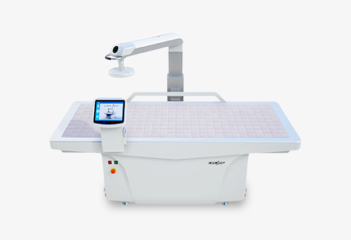
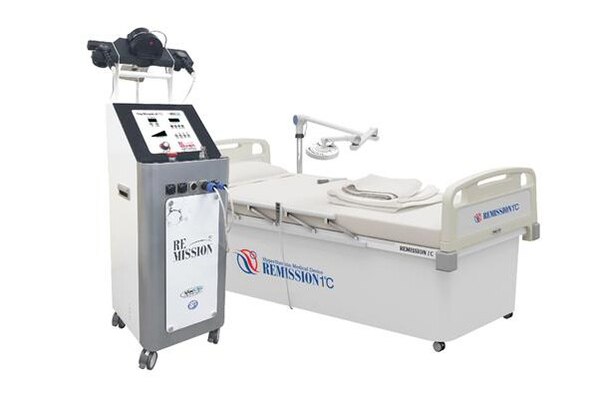

-
암 면역 센터
- 정확한 진단과 근본적인 원인을 치료하는 병원이 되겠습니다.
고주파 온열암 치료
- 고주파 온열암 치료란?
- 해밀병원의 고주파 온열암 치료는 선택적으로 암 조직에만 에너지를 가하여 열을 발생시키고, 생체 대사율을 증가시켜 암 세포로의 산소 공급을 막아 암 세포의 증식을 억제함으로써 암 세포를 파괴하는 치료방법입니다.
-
- 항암 치료 시 병행 효과
- 종양부위에 혈류량을 2배 증가시켜 항암제 농도가 높아져 항암치료의 효과를 높입니다.
-
- 방사선 치료 시 병행 효과
- 조직의 산소화를 향상시켜 방사선 감수성이 증가되어 치료에 효과를 높여줍니다.
-
- 항암, 방사선 치료가 어려운 경우
- 고주파 온열암 치료만으로 직접적인 암세포 사멸 및 암성 통증 완화효과가 있습니다.
고주파 온열암 치료기기


- 최신 고주파 온열암 치료
- 전이 및 말기환자 치료 시 개선효과
- 통증완화 효과
- 부작용과 합병증이 적은 안전한 치료법
- 심부열로 체내 깊은 곳까지 치료 가능
- 다양한 부위의 암치료 가능
- 우수한 안전성
- 고주파온열치료의 주의사항
- - 고주파 온열암치료의 부작용은 일반적으로 경미하지만 다음과 같은 부작용이 발생할 수 있습니다.
- - 피부 아래, 특히 지방이 많은 부위에는 약간의 홍반 같은 화상이 생길 수 있으나, 1주일 이내 자연적으로 없어집니다.
- - 성공적인 고주파온열암치료는 종양 부위에 충분한 온열을 전달하는 것이기에 간혹 치료 부위가 따갑거나 불편함을 느낄 수 있습니다.